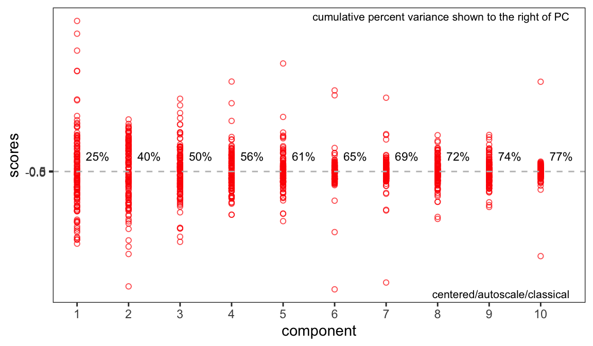
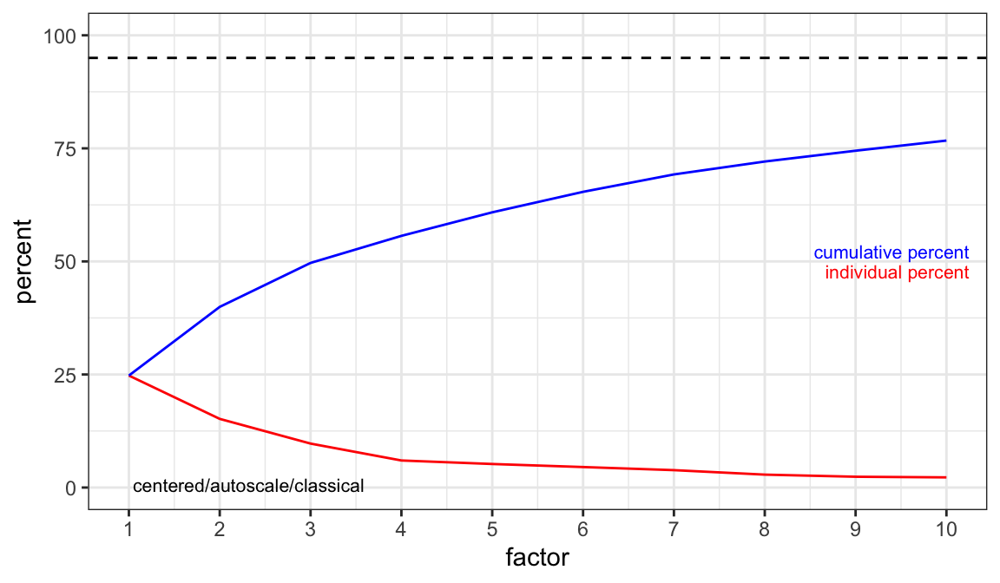
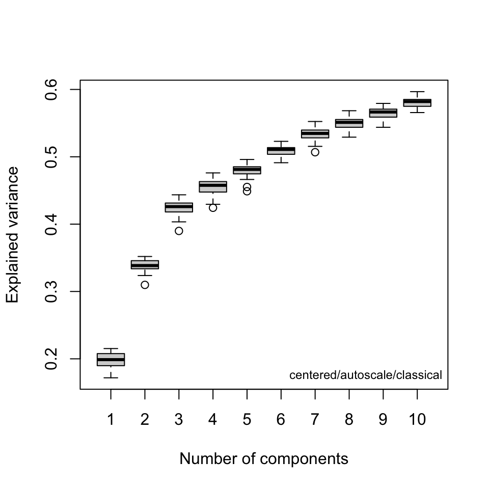
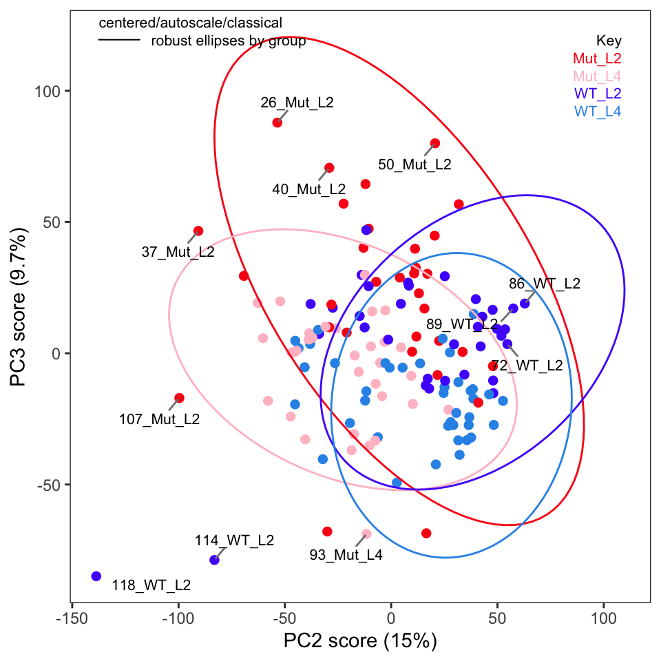
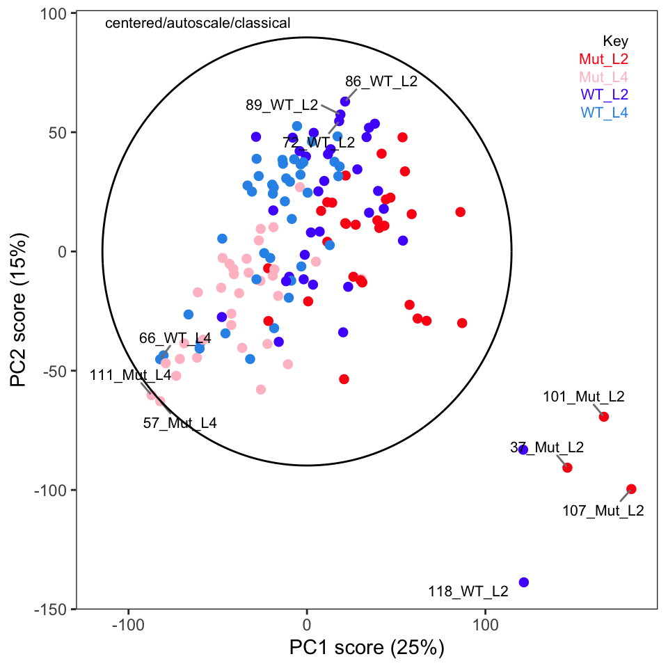

Part 1 of this series is here.
If you aren’t familiar with ChemoSpec, you might wish to look at the introductory vignette first.
In this series of posts we are following the protocol as described in the printed publication closely (Blaise et al. 2021). The authors have also provided a Jupyter notebook. This is well worth your time, even if Python is not your preferred lanaguage, as there are additional examples and discussion for study.
Read in the Data
I saved the Spectra object we created in Part 1 so we can read it and remind ourselves of what’s in it. Due to the compression in R’s save function the data takes up 4.9 Mb on disk. The original csv files total about 62 Mb.
library("ChemoSpec")
load("Worms.Rdata") # restores the 'Worms' Spectra object
sumSpectra(Worms)
C. elegans metabolic phenotyping study (Blaise 2007)
There are 139 spectra in this set.
The y-axis unit is intensity.
The frequency scale runs from
8.9995 to 5e-04 ppm
There are 8600 frequency values.
The frequency resolution is
0.001 ppm/point.
This data set is not continuous
along the frequency axis.
Here are the data chunks:
beg.freq end.freq size beg.indx end.indx
1 8.9995 5.0005 -3.999 1 4000
2 4.5995 0.0005 -4.599 4001 8600
The spectra are divided into 4 groups:
group no. color symbol alt.sym
1 Mut_L2 32 #FB0D16FF 0 m2
2 Mut_L4 33 #FFC0CBFF 15 m4
3 WT_L2 34 #511CFCFF 1 w2
4 WT_L4 40 #2E94E9FF 16 w4
*** Note: this is an S3 object
of class 'Spectra'Exploratory Data Analysis
We will follow the steps described in the published protocol closely.
Normalization & Scaling
Apply PQN normalization; scaling in ChemoSpec is applied at the PCA stage (next).
Worms <- normSpectra(Worms) # PQN is the defaultPCA
Conduct classical PCA using autoscaling.1 Note that ChemoSpec includes several different variants of PCA, each with scaling options. See the introductory vignette for more details. For more about what PCA is and how it works, please see the LearnPCA package.
c_pca <- c_pcaSpectra(Worms, choice = "autoscale") # no scaling is the defaultComponents to Retain
A key question at this stage is how many components are needed to describe the data set. Keep in mind that this depends on the choice of scaling. Figures @ref(fig:screeAlt) and @ref(fig:screeTrad) are two different types of scree plots, which show the residual variance. This is the R2x value in the protocol (see protocol Figure 7a). Another approach to answering this question is to do a cross-validated PCA.2 The results are shown in Figure @ref(fig:cv-pca). These are the Q2x values in protocol Figure 7a. All of these ways of looking at the variance explained suggest that retaining three or possibly four PCs is adequate.
plotScree(c_pca)
plotScree(c_pca, style = "trad")
cv_pcaSpectra(Worms, choice = "autoscale", pcs = 10)
Score Plots
Next, examine the score plots (Figures @ref(fig:scores12), @ref(fig:scores23)). In these plots, each data point is colored by its group membership (keep in mind this is completely independent of the PCA calculation). In addition, robust confidence ellipses are shown for each group. Inspection of these plots is one way to identify potential outliers. The other use is of course to see if the sample classes separate, and by how much.
Examination of these plots shows that separation by classes has not really been achieved using autoscaling. In Figure @ref(fig:scores12) we see four clear outlier candidates (samples 37, 101, 107, and 118). In Figure @ref(fig:scores23) we see some of these samples and should probably add sample 114 for a total of five candidates.
p <- plotScores(Worms, c_pca, pcs = 1:2, ellipse = "rob", tol = 0.02)
p
p <- plotScores(Worms, c_pca, pcs = 2:3, ellipse = "rob", leg.loc = "topright", tol = 0.02)
p
To label more sample points, you can increase the value of the argument tol.
Outliers
The protocol recommends plotting Hotelling’s T2 ellipse for the entire data set; this is not implemented in ChemoSpec but we can easily do it if we are using ggplot2 plots (which is the default in ChemoSpec). We need the ellipseCoord function from the HotellingsEllipse package.3
source("ellipseCoord.R")
xy_coord <- ellipseCoord(as.data.frame(c_pca$x), pcx = 1, pcy = 2, conf.limit = 0.95,
pts = 500)
p <- plotScores(Worms, c_pca, which = 1:2, ellipse = "none", tol = 0.02)
p <- p + geom_path(data = xy_coord, aes(x = x, y = y)) + scale_color_manual(values = "black")
p
We can see many of the same outliers by this approach as we saw in Figures @ref(fig:scores12) and @ref(fig:scores23).
Another way to identify outliers is to use the approach described in Varmuza and Filzmoser (2009) section 3.7.3. Figures @ref(fig:diagOD) and @ref(fig:diagSD) give the plots. Please see Filzmoser for the details, but any samples that are above the plotted threshold line are candidate outliers, and any samples above the threshold in both plots should be looked at very carefully. Though we are using classical PCA, Filzmoser recommends using these plots with robust PCA. These plots are a better approach than “eye balling it” on the score plots.
p <- pcaDiag(Worms, c_pca, plot = "OD")
p
p <- pcaDiag(Worms, c_pca, plot = "SD")
p
Comparison of these plots suggest that samples 37, 101, 107, 114 and 118 are likely outliers. These spectra should be examined to see if the reason for their outlyingness can be deduced. If good reason can be found, they can be removed as follows.4
Worms2 <- removeSample(Worms, rem.sam = c("37_", "101_", "107_", "114_", "118_"))At this point one should repeat the PCA, score plots and diagnostic plots to get a good look at how removing these samples affected the results. Those tasks are left to the reader.
We will continue in the next post with a discussion of loadings.
This post was created using ChemoSpec version 6.1.3 and ChemoSpecUtils version 1.0.0.
References
Footnotes
Without scaling, the largest peaks will drive the separation in the scores plot.↩︎
Be sure you have
ChemoSpec6.1.3 or higher, ascv_pcaSpectrahad a bug in it! One benefit of writing these posts is finding lame bugs…↩︎We are sourcing in a corrected version of the function, as the CRAN version has a small error in it.↩︎
The Jupyter notebook has details about this.↩︎